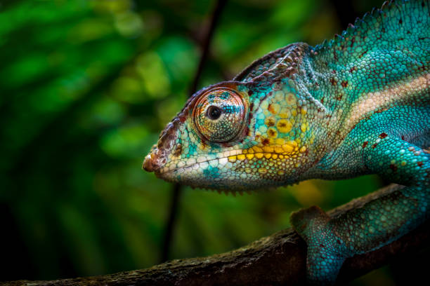
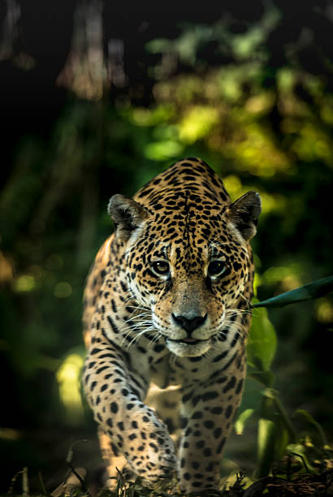
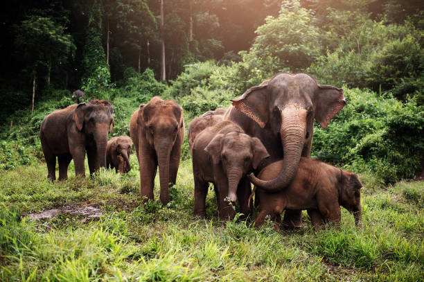
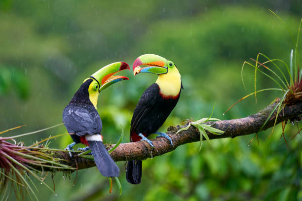
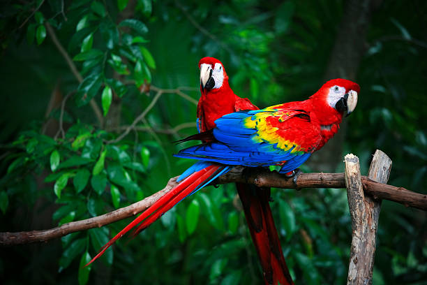
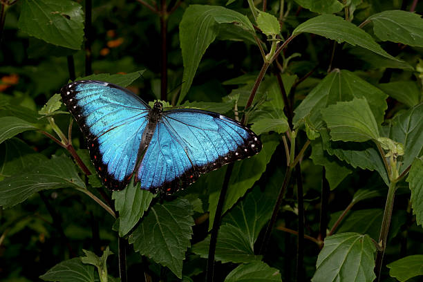
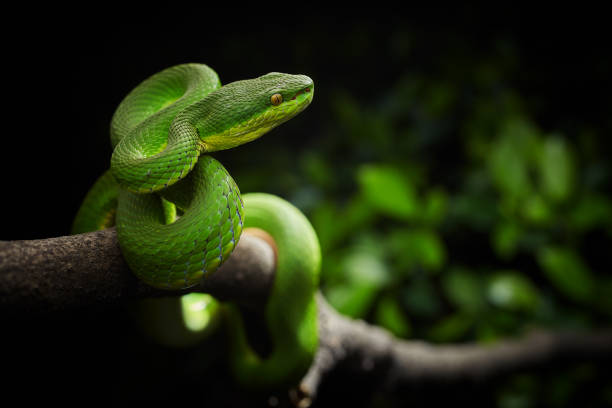

Welcome to the lush wilderness of Wilpattu National Park (IP). Ranging over 131 thousand hectares, it is Sri Lanka’s largest and one of the oldest protected areas. The park consists of five blocks declared between 1938-1973 under the Fauna and Flora Protection Ordinance and is managed by the Department of Wildlife Conservation.
IP spans across the Puttalam and Anuradhapura districts, and borders the Mannar and Vavuniya Districts. The area is one of the most important elephant habitats in the country and is also a great place to observe the elusive Sri Lankan leopard and the sloth bear.
This park has a denser forest cover unlike many other National Parks in Sri Lanka. IPs landscape comprises of dry zone forests and thorny scrub interspersed with extensive open plains, sand dunes and the unique Villu wetlands. Bare reddish cliffs rising abruptly from narrow beaches of the Portugal Bay and Dutch Bay are another striking feature of its landscape.
IP is in the proximity to the ancient historical city of Anuradhapura and houses several ancient ruins and artifacts from various periods of history.